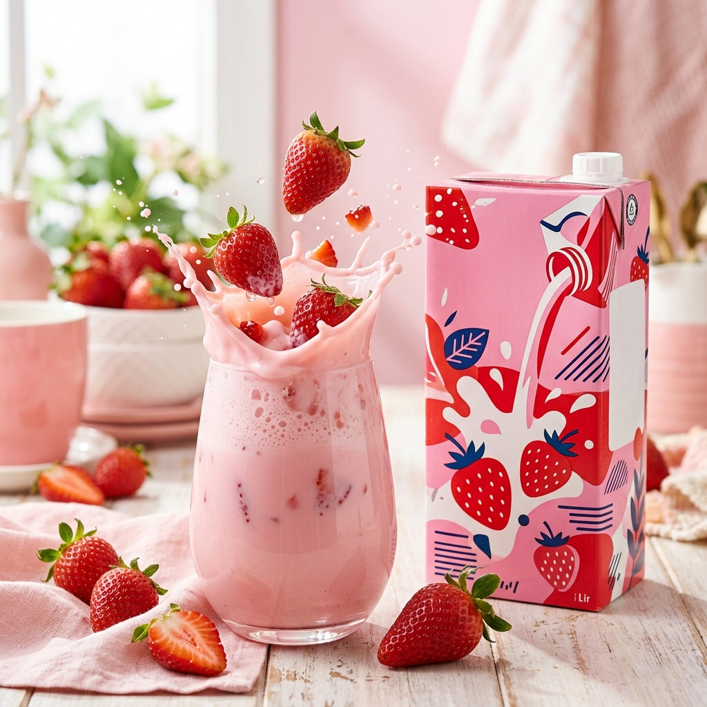

Bagian 1
Kenapa Ultramilk Stroberi Begitu Dicintai?
Siapa yang tidak kenal dengan kemasan merah muda ikonik dari Ultra Milk Stroberi? Di Indonesia, minuman ini bukan sekadar susu rasa biasa; ia adalah teman setia dalam berbagai momen kehidupan. Mulai dari anak-anak yang bersemangat menyambut kotak susunya di jam istirahat sekolah, mahasiswa yang butuh asupan energi cepat, hingga orang dewasa yang merindukan rasa nyaman di tengah kesibukan.
Popularitasnya yang universal bukan tanpa alasan. Perpaduan antara kualitas susu sapi segar Ultra Jaya yang sudah melegenda dengan sentuhan rasa buah stroberi yang ceria menciptakan daya tarik yang sulit ditolak. Mari kita bedah lebih dalam mengapa susu rasa stroberi ini selalu punya tempat spesial di hati (dan kulkas) kita semua!
Tahukah Kamu?
Warna merah muda pada kemasannya telah menjadi identitas yang sangat melekat bagi pencinta susu rasa stroberi di seluruh penjuru negeri.
Bagian 2
Profil Rasa yang Menggoda: Manisnya Stroberi Alami
Satu hal yang membuat Ultra Milk Stroberi menonjol di tumpukan rak supermarket adalah keseimbangan rasanya. Saat pertama kali mencicipinya, lidah kamu akan disambut oleh tekstur susu yang lembut dan *creamy*. Tidak lama kemudian, aroma stroberi yang segar mulai merebak, diikuti oleh rasa manis yang pas—tidak berlebihan, namun cukup untuk memberikan ledakan kebahagiaan.

Dibandingkan dengan varian lain seperti cokelat yang cenderung berat dan kaya, atau moka yang lebih kuat aromanya, varian stroberi menawarkan pengalaman yang lebih ringan dan menyegarkan (*refreshing*). Ini menjadikannya pilihan ideal saat kamu tidak ingin sesuatu yang terlalu mengenyangkan, tapi tetap mendambakan rasa yang memanjakan.
Tips Kuliner
Ingin rasa yang lebih mewah? Cobalah jadikan Ultra Milk Stroberi sebagai bahan dasar *strawberry smoothie* dengan menambahkan potongan buah beri asli!
Bagian 3
Manfaat Sehat di Setiap Tegukan
- Kalsium — Menjaga kesehatan tulang dan gigi agar tetap kuat.
- Vitamin D — Membantu penyerapan kalsium secara maksimal oleh tubuh.
- Protein — Penting untuk pertumbuhan sel dan pemulihan energi setelah beraktivitas.
- Vitamin & Mineral Lain — Menjaga daya tahan tubuh tetap prima setiap hari.
Menikmati Ultra Milk Stroberi bukan cuma soal memuaskan keinginan lidah, tapi juga cara yang enak untuk memenuhi kebutuhan nutrisi harian kamu. Bagi para remaja yang sedang dalam masa pertumbuhan dan dewasa muda dengan jadwal padat, kandungan protein dan kalsiumnya sangat membantu menjaga stamina dan kekuatan tulang.
Ini adalah solusi cerdas untuk orang tua yang ingin anak-anaknya rajin minum susu tanpa harus dipaksa. Dengan rasa yang enak, anak-anak akan menganggapnya sebagai camilan lezat, sementara orang tua bisa tenang mengetahui si kecil mendapatkan nutrisi yang dibutuhkan.
Penting
Meskipun memberikan energi tambahan, pastikan untuk tetap mengonsumsi air putih yang cukup dan makanan bergizi seimbang lainnya dalam pola makan harian kamu.
Bagian 4
Momen Terbaik Menikmati Ultramilk Stroberi
Kapan waktu paling pas untuk membuka sekotak Ultra Milk Stroberi? Jawabannya: kapan saja! Namun, ada beberapa momen yang bisa menjadi jauh lebih istimewa jika ditemani si pink ini:
- Sarapan Cepat: Saat kamu terburu-buru mengejar kereta atau bus, susu ini memberikan asupan energi awal yang praktis.
- Teman Belajar: Butuh selingan saat otak mulai panas mengerjakan tugas? Kesegarannya bisa mengembalikan fokus kamu.
- Pelepas Dahaga: Sesaat setelah berolahraga atau berjalan di bawah terik matahari, rasanya sangat melegakan.
- Camilan Sehat: Daripada jajan yang tidak jelas kandungannya, lebih baik pilih susu bernutrisi.
Pro Tip
Ultramilk Stroberi mutlak dinikmati dalam kondisi dingin dari kulkas. Kesegarannya akan meningkat berkali-kali lipat!
Bagian 5 · Penutup
Lebih dari Sekadar Susu Biasa
Secara keseluruhan, Ultra Milk Stroberi bukanlah sekadar produk yang lewat dalam tren sesaat. Ia adalah gabungan antara rasa yang lezat, nutrisi yang terjamin, dan kepraktisan yang menyesuaikan dengan gaya hidup aktif masa kini. Di tengah banyaknya pilihan minuman modern, kesederhanaan rasa stroberi alami yang autentik tetap tak tergantikan.
Jadi, sudahkah kamu menyiapkan stok susu stroberi kesukaanmu di kulkas hari ini? Ingat, satu tegukan kesegaran bisa mengubah momen biasa kamu menjadi lebih ceria!
Refleksi
Setelah membaca artikel ini, mari renungkan kebiasaan sehat kita:
- Kapankah waktu favorit kamu untuk menikmati Ultra Milk Stroberi?
- Apakah kamu sudah memenuhi kebutuhan kalsium harianmu dengan cara yang menyenangkan?